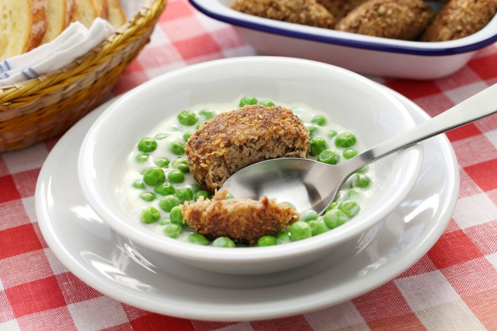

Zöldborsó főzelék fasírttal
Hozzávalók
- 1 kg borsó
- 1 db hagyma
- 2 dl tej
- 2 ek liszt
- 2 gerezd fokhagyma
- 1 ek cukor
- 1 csok petrezselyem
- só
- bors
- 60 dkg darált sertéshús
- 2 db tojás
- 2 db zsemle
- 2 db vöröshagyma
- 3 gerezd fokhagyma
- 1 csomag petrezselyem
- só
- bors
- pirospaprika
- 4 ek napraforgó olaj
- 5 ek zsemlemorzsa
Elkészítés
Egy lábasban forró olajon üvegesre pároljuk a hagymát, belerajkuk a mélyhűtött borsót, és addig pároljuk, amíg a borsó fel nem enged. Felöntjük annyi vízzel, amennyi ellepi. Sózzuk, borsozzuk, cukrozzuk ízlés szerint, és főzzük, amíg a borsó meg nem puhul. Közben elkészítjük a habarást. Egy tálban csomómentesre keverjük a lisztet a tejjel, belereszeljük a fokhagymát. A habarást a megpuhult borsóhoz öntjük, közben kevergetjük. Forrás után még öt percig a főni hagyjuk, hogy a liszt íze beleolvadjon a főzelékbe. Végül hozzáadjuk az apróra vágott petrezselymet is. A hagymát megpucoljuk, és apró darabokra vágjuk, a zsemléket vízben megáztatjuk, és kinyomkodjuk, majd az összes többi hozzávalóval egy nagy tálba rakjuk. Ízlés szerint fűszerezzük. A masszát alaposan összedolgozzuk. Egy tepsit vékonyan megkenjük olajjal. A masszából kis golyókat gyúrunk, meghempergetjük a zsemlemorzsában, és egymás mellé tesszük őket a tepsibe. Alufóliával letakarva 20 percig sütjük, majd levesszük a fóliát, és még 20 percet sütjük, hogy aranybarna színük legyen.